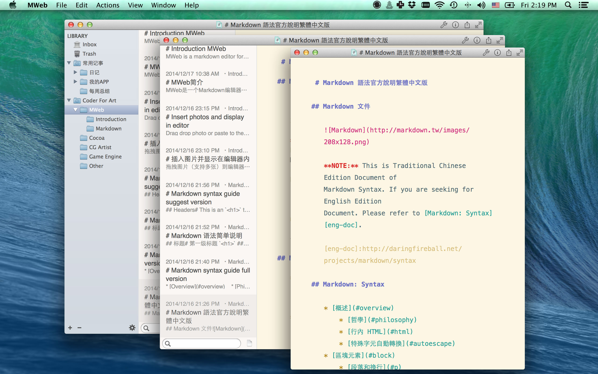

MWeb 现在有了新官网
中文：http://zh.mweb.im
English：http://www.mweb.im
注意： 这个页面的信息都是旧的，这页也不再更新！
MWeb帮助
如果您不知道什么是Markdown，请阅读以下两篇文章
Markdown 语法简单说明
Markdown 语法官方说明繁体中文版
MWeb所有问题和回答收集（会不断更新）
MWeb问题和回答
如果您在上面的连接中找不到答案，请在MWeb中点：Help --> Send Feedback 写信给我！
MWeb其他可能有用的文章
自定网站主题、增加评论和分享和设计新主题...
MWeb更多截图和在Yosemite下的效果
MWeb 1.1 版更新说明
MWeb 1.2 版更新说明
把生成的静态网站发布到github或FTP
使用GoodSync把MWeb生成的静态网站自动同步到FTP、SFTP、WebDAV、Amazon S3等
MWeb简介
MWeb是一个Markdown编辑器和全静态网站、博客生成工具，像Octopress和 Jekyll，但是更简单易用。MWeb很合适经常用Markdown写文档、日记和经常要插入图片和大段代码的朋友。
 


MWeb的Markdown编辑功能
首先MWeb必须是一个好用的Markdown编辑器，语法高亮，预览，Fenced code blocks和代码高亮支持，Math ML支持，导出HTML/PDF，自定编辑器主题，字数统计，大纲视图，autosave,文档历史版本什么的等等都是要有的。另外MWeb分为两种模式：
- 一种是由MWeb管理的库文档模式，这种模式下可以用分类管理文档，可以拖拽插入图片，可以生成全静态网站。
- 一种是外部文文件模式，文件夹的Markdown文檔直接用MWeb打开就是这种模式，区别是无拖拽插入图片功能，不能生成网站。
 

插入图片并显示在编辑器内
MWeb的设计就是为了能方便地用Markdown记日记、简单的管理日记并生成博客。而写日记时插入图片的功能是经常用到的。一般的Markdown工具如果要插入图片，要先丢到网上。像Ulysses是可以方便插入图片，但是要双击或者预览时才能看到。MWeb设计成可拖拽或直接粘贴即可插入图片并显示出来，以方便查看。
 


一键将分类生成全静态的网站和博客
MWeb的分类管理的设计跟博客的结构差不多，一个文档可以选择多个分类。将分类变成博客的方法为：选择该分类 --> Set to site。设定好博客的名称和描述等等，点：Build site 按钮即可。如果有改动到 Theme 或者有任何没有在预料之中的结果，试试点 Clear and rebuild site 按钮。 点 Preview site 按钮可以预览生成的博客。http://coderforart.com/ 网站就是用MWeb生成的。


MWeb还可以自定网站和博客主题，增加评论和分享功能，请参考这个网址: 自定网站主题、增加评论和分享和设计新主题...
三种视图模式、改变视图时编辑器大小会固定
Editor Only:CMD + 1, Two Pane:CMD + 2, There Pane:CMD + 3。我觉得改变视图时，编辑器区域大小也同时改变不大爽，所以改变视图时就直接改变窗口大小，而编辑器区域大小会保持不变。

预览、分享功能，更多截图
预览快捷键：CMD + R，关闭预览：CMD + W


更多截图: MWeb更多截图和在Yosemite下的效果